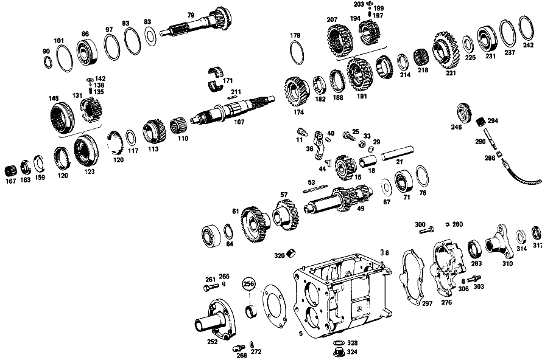

| № | Артикул | Название | Кол. | Примечание | Ограничение |
|---|---|---|---|---|---|
| 332 | A 117 260 12 11 | КОРПУС КП | 1 | Коробка передач [010] 024/025 FROM CHASSIS 002864 ALSO INSTALLED ON 002123,002193,002327,002402,002539,002546,002726,002731,002744,002748,002757,002760,002763,002797,002862 | |
| 335 | N 000939 010012 | - Винт | 6 | Коробка передач [010] 024/025 FROM CHASSIS 002864 ALSO INSTALLED ON 002123,002193,002327,002402,002539,002546,002726,002731,002744,002748,002757,002760,002763,002797,002862 | |
| 338 | A 115 263 13 30 | - Ось шестерни заднего хода | 1 | Коробка передач [023] 024/025 FROM TRANSMISSION 041342; 026/027 FROM TRANSMISSION 001648 [025] TO TRANSMISSION CASE 117 260 12 11 | |
| 343 | A 117 263 15 02 | ПРОМЕЖУТОЧНЫЙ ВАЛ | 1 | Коробка передач [010] 024/025 FROM CHASSIS 002864 ALSO INSTALLED ON 002123,002193,002327,002402,002539,002546,002726,002731,002744,002748,002757,002760,002763,002797,002862 | |
| 346 | A 117 991 07 68 | Призматическая шпонка | 1 | Коробка передач [010] 024/025 FROM CHASSIS 002864 ALSO INSTALLED ON 002123,002193,002327,002402,002539,002546,002726,002731,002744,002748,002757,002760,002763,002797,002862 | |
| 349 | A 117 263 03 13 | ШЕСТЕРНЯ | 1 | ТРЕТЬЯ ПЕРЕДАЧА Коробка передач [010] 024/025 FROM CHASSIS 002864 ALSO INSTALLED ON 002123,002193,002327,002402,002539,002546,002726,002731,002744,002748,002757,002760,002763,002797,002862 | |
| 353 | A 117 263 08 10 | ШЕСТЕРНЯ | 1 | ЧЕТВЁРТАЯ ПЕРЕДАЧА Коробка передач [010] 024/025 FROM CHASSIS 002864 ALSO INSTALLED ON 002123,002193,002327,002402,002539,002546,002726,002731,002744,002748,002757,002760,002763,002797,002862 | |
| 357 | A 115 263 07 52 | Дистанционная шайба | 1 | Коробка передач [010] 024/025 FROM CHASSIS 002864 ALSO INSTALLED ON 002123,002193,002327,002402,002539,002546,002726,002731,002744,002748,002757,002760,002763,002797,002862 | |
| 363 | A 115 990 08 51 | гайка | 1 | Коробка передач [010] 024/025 FROM CHASSIS 002864 ALSO INSTALLED ON 002123,002193,002327,002402,002539,002546,002726,002731,002744,002748,002757,002760,002763,002797,002862 | |
| 370 | A 186 262 00 66 | Маслозащитное кольцо | 1 | Коробка передач [010] 024/025 FROM CHASSIS 002864 ALSO INSTALLED ON 002123,002193,002327,002402,002539,002546,002726,002731,002744,002748,002757,002760,002763,002797,002862 | |
| 379 | A 309 262 00 26 | Шлицевая гайка | 1 | Коробка передач | |
| 383 | A 186 262 04 51 | Проставочное кольцо | 1 | Рулевое управление: ВлевоКоробка передач [010] 024/025 FROM CHASSIS 002864 ALSO INSTALLED ON 002123,002193,002327,002402,002539,002546,002726,002731,002744,002748,002757,002760,002763,002797,002862 | |
| 386 | A 136 994 06 35 | Пруж. стопорное кольцо | 1 | ПО НЕОБХОДИМОСТИ 1.9 MM Рулевое управление: ВправоКоробка передач [010] 024/025 FROM CHASSIS 002864 ALSO INSTALLED ON 002123,002193,002327,002402,002539,002546,002726,002731,002744,002748,002757,002760,002763,002797,002862 | |
| 390 | A 136 262 06 52 | Компенсационная шайба | 1 | ПО НЕОБХОДИМОСТИ 0.1 MM Коробка передач [010] 024/025 FROM CHASSIS 002864 ALSO INSTALLED ON 002123,002193,002327,002402,002539,002546,002726,002731,002744,002748,002757,002760,002763,002797,002862 | |
| 394 | A 309 262 09 05 | ВТОРИЧНЫЙ ВАЛ | 1 | Коробка передач [402] БОЛЬШЕ НЕ ПОСТАВЛЯЕТСЯ [010] 024/025 FROM CHASSIS 002864 ALSO INSTALLED ON 002123,002193,002327,002402,002539,002546,002726,002731,002744,002748,002757,002760,002763,002797,002862 | |
| 397 | A 117 260 11 44 | ШЕСТЕРНЯ | 1 | ТРЕТЬЯ ПЕРЕДАЧА Коробка передач [402] БОЛЬШЕ НЕ ПОСТАВЛЯЕТСЯ [010] 024/025 FROM CHASSIS 002864 ALSO INSTALLED ON 002123,002193,002327,002402,002539,002546,002726,002731,002744,002748,002757,002760,002763,002797,002862 | |
| 402 | A 115 262 16 34 | Кольцо синхронизатора | 2 | Коробка передач [010] 024/025 FROM CHASSIS 002864 ALSO INSTALLED ON 002123,002193,002327,002402,002539,002546,002726,002731,002744,002748,002757,002760,002763,002797,002862 | |
| 406 | A 120 262 23 62 | Упорная шайба | 1 | Коробка передач [010] 024/025 FROM CHASSIS 002864 ALSO INSTALLED ON 002123,002193,002327,002402,002539,002546,002726,002731,002744,002748,002757,002760,002763,002797,002862 | |
| 409 | A 004 981 07 10 | Сепаратор иг. подшипника | 2 | ТРЕТЬЯ ПЕРЕДАЧА Коробка передач [010] 024/025 FROM CHASSIS 002864 ALSO INSTALLED ON 002123,002193,002327,002402,002539,002546,002726,002731,002744,002748,002757,002760,002763,002797,002862 | |
| 413 | A 005 981 54 10 | Игольчатый подшипник | 1 | Коробка передач [010] 024/025 FROM CHASSIS 002864 ALSO INSTALLED ON 002123,002193,002327,002402,002539,002546,002726,002731,002744,002748,002757,002760,002763,002797,002862 | |
| 417 | A 115 260 49 45 | Корпус синхронизатора | 1 | ТРЕТЬЯ И ЧЕТВЁРТАЯ ПЕРЕДАЧА Коробка передач [010] 024/025 FROM CHASSIS 002864 ALSO INSTALLED ON 002123,002193,002327,002402,002539,002546,002726,002731,002744,002748,002757,002760,002763,002797,002862 | |
| 421 | A 115 262 18 23 | - Скользящая муфта | - | Коробка передач [402] БОЛЬШЕ НЕ ПОСТАВЛЯЕТСЯ [028] NO LONGER AVAILABLE | |
| 423 | A 115 262 12 35 | - СИНХРОНИЗАТОР | - | Коробка передач [402] БОЛЬШЕ НЕ ПОСТАВЛЯЕТСЯ [028] NO LONGER AVAILABLE | |
| 425 | A 180 993 41 01 | - пружина | 1 | Коробка передач [010] 024/025 FROM CHASSIS 002864 ALSO INSTALLED ON 002123,002193,002327,002402,002539,002546,002726,002731,002744,002748,002757,002760,002763,002797,002862 | |
| 427 | N 005401 306500 | - Шар | 1 | 6.5mm Коробка передач [010] 024/025 FROM CHASSIS 002864 ALSO INSTALLED ON 002123,002193,002327,002402,002539,002546,002726,002731,002744,002748,002757,002760,002763,002797,002862 | |
| 429 | A 115 262 01 40 | - Поводок | 1 | Коробка передач [010] 024/025 FROM CHASSIS 002864 ALSO INSTALLED ON 002123,002193,002327,002402,002539,002546,002726,002731,002744,002748,002757,002760,002763,002797,002862 | |
| 431 | A 115 990 10 51 | гайка | 1 | Коробка передач [010] 024/025 FROM CHASSIS 002864 ALSO INSTALLED ON 002123,002193,002327,002402,002539,002546,002726,002731,002744,002748,002757,002760,002763,002797,002862 | |
| 433 | A 004 981 08 10 | ПОДШИПНИК ИГОЛЬЧАТЫЙ | 1 | Коробка передач [010] 024/025 FROM CHASSIS 002864 ALSO INSTALLED ON 002123,002193,002327,002402,002539,002546,002726,002731,002744,002748,002757,002760,002763,002797,002862 | |
| 435 | A 117 260 07 44 | ШЕСТЕРНЯ | 1 | Коробка передач [402] БОЛЬШЕ НЕ ПОСТАВЛЯЕТСЯ [010] 024/025 FROM CHASSIS 002864 ALSO INSTALLED ON 002123,002193,002327,002402,002539,002546,002726,002731,002744,002748,002757,002760,002763,002797,002862 | |
| 438 | A 115 262 09 62 | ШАЙБА УПОРНАЯ | 1 | 4.0 MM Коробка передач [402] БОЛЬШЕ НЕ ПОСТАВЛЯЕТСЯ [010] 024/025 FROM CHASSIS 002864 ALSO INSTALLED ON 002123,002193,002327,002402,002539,002546,002726,002731,002744,002748,002757,002760,002763,002797,002862 | |
| 440 | A 115 262 15 34 | КОЛЬЦО СИНХРОНИЗАТОРА | 2 | Коробка передач [010] 024/025 FROM CHASSIS 002864 ALSO INSTALLED ON 002123,002193,002327,002402,002539,002546,002726,002731,002744,002748,002757,002760,002763,002797,002862 | |
| 443 | A 117 260 33 45 | Корпус синхронизатора | 1 | ПЕРВАЯ И ВТОРАЯ ПЕРЕДАЧА Коробка передач [010] 024/025 FROM CHASSIS 002864 ALSO INSTALLED ON 002123,002193,002327,002402,002539,002546,002726,002731,002744,002748,002757,002760,002763,002797,002862 | |
| 445 | A 115 262 14 23 | - СКОЛЬЗ. МУФТА СИНХРОНИЗ. | - | Коробка передач [402] БОЛЬШЕ НЕ ПОСТАВЛЯЕТСЯ [028] NO LONGER AVAILABLE | |
| 447 | A 117 262 04 35 | - СИНХРОНИЗАТОР | - | Коробка передач [402] БОЛЬШЕ НЕ ПОСТАВЛЯЕТСЯ [028] NO LONGER AVAILABLE | |
| 449 | A 180 993 41 01 | - пружина | 3 | Коробка передач [010] 024/025 FROM CHASSIS 002864 ALSO INSTALLED ON 002123,002193,002327,002402,002539,002546,002726,002731,002744,002748,002757,002760,002763,002797,002862 | |
| 451 | N 005401 306500 | - Шар | 3 | 6.5mm Коробка передач [010] 024/025 FROM CHASSIS 002864 ALSO INSTALLED ON 002123,002193,002327,002402,002539,002546,002726,002731,002744,002748,002757,002760,002763,002797,002862 | |
| 453 | A 115 262 02 40 | - ПОВОДОК | 3 | Коробка передач [402] БОЛЬШЕ НЕ ПОСТАВЛЯЕТСЯ [010] 024/025 FROM CHASSIS 002864 ALSO INSTALLED ON 002123,002193,002327,002402,002539,002546,002726,002731,002744,002748,002757,002760,002763,002797,002862 | |
| 455 | A 115 262 09 62 | ШАЙБА УПОРНАЯ | 1 | 4.0 MM Коробка передач [402] БОЛЬШЕ НЕ ПОСТАВЛЯЕТСЯ [010] 024/025 FROM CHASSIS 002864 ALSO INSTALLED ON 002123,002193,002327,002402,002539,002546,002726,002731,002744,002748,002757,002760,002763,002797,002862 | |
| 458 | A 117 262 04 11 | ШЕСТЕРНЯ | - | Коробка передач | |
| 458 | A 117 262 10 11 | ШЕСТЕРНЯ | 1 | Коробка передач [402] БОЛЬШЕ НЕ ПОСТАВЛЯЕТСЯ [010] 024/025 FROM CHASSIS 002864 ALSO INSTALLED ON 002123,002193,002327,002402,002539,002546,002726,002731,002744,002748,002757,002760,002763,002797,002862 | |
| 461 | A 117 262 02 51 | Проставочное кольцо | 1 | Коробка передач [010] 024/025 FROM CHASSIS 002864 ALSO INSTALLED ON 002123,002193,002327,002402,002539,002546,002726,002731,002744,002748,002757,002760,002763,002797,002862 | |
| 463 | A 004 981 08 10 | ПОДШИПНИК ИГОЛЬЧАТЫЙ | 1 | Коробка передач [010] 024/025 FROM CHASSIS 002864 ALSO INSTALLED ON 002123,002193,002327,002402,002539,002546,002726,002731,002744,002748,002757,002760,002763,002797,002862 | |
| 465 | A 115 262 25 62 | ШАЙБА УПОРНАЯ | 1 | ПО НЕОБХОДИМОСТИ 3.8 MM Коробка передач [402] БОЛЬШЕ НЕ ПОСТАВЛЯЕТСЯ [010] 024/025 FROM CHASSIS 002864 ALSO INSTALLED ON 002123,002193,002327,002402,002539,002546,002726,002731,002744,002748,002757,002760,002763,002797,002862 | |
| 470 | A 115 263 09 32 | ШЕСТЕРНЯ ОБРАТНОГО ХОДА | 1 | Коробка передач [010] 024/025 FROM CHASSIS 002864 ALSO INSTALLED ON 002123,002193,002327,002402,002539,002546,002726,002731,002744,002748,002757,002760,002763,002797,002862 | |
| 472 | A 136 994 06 35 | Пруж. стопорное кольцо | 1 | ПО НЕОБХОДИМОСТИ 1.9 MM Коробка передач [010] 024/025 FROM CHASSIS 002864 ALSO INSTALLED ON 002123,002193,002327,002402,002539,002546,002726,002731,002744,002748,002757,002760,002763,002797,002862 | |
| 475 | A 136 262 06 52 | Компенсационная шайба | 1 | ПО НЕОБХОДИМОСТИ 0.1 MM Коробка передач [010] 024/025 FROM CHASSIS 002864 ALSO INSTALLED ON 002123,002193,002327,002402,002539,002546,002726,002731,002744,002748,002757,002760,002763,002797,002862 | |
| 477 | A 115 262 26 39 | Удерживающее кольцо | 1 | Коробка передач [010] 024/025 FROM CHASSIS 002864 ALSO INSTALLED ON 002123,002193,002327,002402,002539,002546,002726,002731,002744,002748,002757,002760,002763,002797,002862 | |
| 479 | N 000137 007201 | Пружинная шайба | 4 | Коробка передач [010] 024/025 FROM CHASSIS 002864 ALSO INSTALLED ON 002123,002193,002327,002402,002539,002546,002726,002731,002744,002748,002757,002760,002763,002797,002862 | |
| 481 | A 115 990 06 01 | болт | 4 | Коробка передач [010] 024/025 FROM CHASSIS 002864 ALSO INSTALLED ON 002123,002193,002327,002402,002539,002546,002726,002731,002744,002748,002757,002760,002763,002797,002862 | |
| 486 | A 115 990 09 51 | гайка | 1 | Коробка передач [010] 024/025 FROM CHASSIS 002864 ALSO INSTALLED ON 002123,002193,002327,002402,002539,002546,002726,002731,002744,002748,002757,002760,002763,002797,002862 | |
| 488 | A 117 262 07 21 | Шестерня заднего хода | 1 | REVERSE IDLER, MAINSHAFT Коробка передач [010] 024/025 FROM CHASSIS 002864 ALSO INSTALLED ON 002123,002193,002327,002402,002539,002546,002726,002731,002744,002748,002757,002760,002763,002797,002862 | |
| 490 | A 115 260 06 48 | ПРИВОДНАЯ ШЕСТЕРНЯ | 1 | СПИДОМЕТР Коробка передач [010] 024/025 FROM CHASSIS 002864 ALSO INSTALLED ON 002123,002193,002327,002402,002539,002546,002726,002731,002744,002748,002757,002760,002763,002797,002862 | |
| 495 | A 115 260 10 25 | Шестерня заднего хода | 1 | ОБРАТНАЯ МАГИСТРАЛЬ Коробка передач [010] 024/025 FROM CHASSIS 002864 ALSO INSTALLED ON 002123,002193,002327,002402,002539,002546,002726,002731,002744,002748,002757,002760,002763,002797,002862 | |
| 497 | A 117 263 01 50 | - втулка | 1 | Коробка передач [010] 024/025 FROM CHASSIS 002864 ALSO INSTALLED ON 002123,002193,002327,002402,002539,002546,002726,002731,002744,002748,002757,002760,002763,002797,002862 | |
| 499 | A 117 260 09 31 | Тяга переключения передач | 1 | ПЕРЕДАЧА ЗАДНЕГО ХОДА Коробка передач [010] 024/025 FROM CHASSIS 002864 ALSO INSTALLED ON 002123,002193,002327,002402,002539,002546,002726,002731,002744,002748,002757,002760,002763,002797,002862 | |
| 501 | A 115 265 02 19 | Поводок | 1 | ПЕРЕДАЧА ЗАДНЕГО ХОДА Коробка передач [010] 024/025 FROM CHASSIS 002864 ALSO INSTALLED ON 002123,002193,002327,002402,002539,002546,002726,002731,002744,002748,002757,002760,002763,002797,002862 | |
| 503 | N 001481 006005 | Распорный штифт | 1 | Коробка передач [010] 024/025 FROM CHASSIS 002864 ALSO INSTALLED ON 002123,002193,002327,002402,002539,002546,002726,002731,002744,002748,002757,002760,002763,002797,002862 | |
| 505 | A 115 260 22 16 | КРЫШКА КОРПУСА | 1 | СЗАДИ Коробка передач [402] БОЛЬШЕ НЕ ПОСТАВЛЯЕТСЯ [010] 024/025 FROM CHASSIS 002864 ALSO INSTALLED ON 002123,002193,002327,002402,002539,002546,002726,002731,002744,002748,002757,002760,002763,002797,002862 | |
| 507 | A 153 264 00 55 | - Пробка | 1 | Коробка передач [010] 024/025 FROM CHASSIS 002864 ALSO INSTALLED ON 002123,002193,002327,002402,002539,002546,002726,002731,002744,002748,002757,002760,002763,002797,002862 [012] 024/025 UP TO CHASSIS 005054; 026/027 UP TO CHASSIS 002944 | |
| 509 | A 115 261 02 79 | Уплотнительная прокладка | 1 | Коробка передач [402] БОЛЬШЕ НЕ ПОСТАВЛЯЕТСЯ [010] 024/025 FROM CHASSIS 002864 ALSO INSTALLED ON 002123,002193,002327,002402,002539,002546,002726,002731,002744,002748,002757,002760,002763,002797,002862 | |
| 511 | A 005 997 87 47 | УПЛОТНИТ. КОЛЬЦО | 1 | ВТОРИЧНЫЙ ВАЛ Коробка передач [010] 024/025 FROM CHASSIS 002864 ALSO INSTALLED ON 002123,002193,002327,002402,002539,002546,002726,002731,002744,002748,002757,002760,002763,002797,002862 | |
| 515 | A 115 264 01 32 | Вал | 1 | СПИДОМЕТР Коробка передач [402] БОЛЬШЕ НЕ ПОСТАВЛЯЕТСЯ [010] 024/025 FROM CHASSIS 002864 ALSO INSTALLED ON 002123,002193,002327,002402,002539,002546,002726,002731,002744,002748,002757,002760,002763,002797,002862 | |
| 517 | A 115 260 06 48 | ПРИВОДНАЯ ШЕСТЕРНЯ | 1 | СПИДОМЕТР Коробка передач [010] 024/025 FROM CHASSIS 002864 ALSO INSTALLED ON 002123,002193,002327,002402,002539,002546,002726,002731,002744,002748,002757,002760,002763,002797,002862 | |
| 521 | N 000933 007019 | Винт | 3 | Коробка передач [010] 024/025 FROM CHASSIS 002864 ALSO INSTALLED ON 002123,002193,002327,002402,002539,002546,002726,002731,002744,002748,002757,002760,002763,002797,002862 | |
| 523 | N 000931 010258 | Винт | 2 | Коробка передач [010] 024/025 FROM CHASSIS 002864 ALSO INSTALLED ON 002123,002193,002327,002402,002539,002546,002726,002731,002744,002748,002757,002760,002763,002797,002862 | |
| 525 | A 115 990 13 10 | БОЛТ | 2 | Коробка передач [402] БОЛЬШЕ НЕ ПОСТАВЛЯЕТСЯ [010] 024/025 FROM CHASSIS 002864 ALSO INSTALLED ON 002123,002193,002327,002402,002539,002546,002726,002731,002744,002748,002757,002760,002763,002797,002862 | |
| 527 | N 000125 007408 | Шайба | - | Коробка передач | |
| 527 | N 006902 007100 | Шайба | 3 | Коробка передач [010] 024/025 FROM CHASSIS 002864 ALSO INSTALLED ON 002123,002193,002327,002402,002539,002546,002726,002731,002744,002748,002757,002760,002763,002797,002862 | |
| 529 | N 000125 010518 | Шайба | - | Коробка передач | |
| 529 | N 000125 010532 | Шайба | 6 | Коробка передач [010] 024/025 FROM CHASSIS 002864 ALSO INSTALLED ON 002123,002193,002327,002402,002539,002546,002726,002731,002744,002748,002757,002760,002763,002797,002862 | |
| 531 | A 115 262 11 45 | Фланец | 1 | Коробка передач [010] 024/025 FROM CHASSIS 002864 ALSO INSTALLED ON 002123,002193,002327,002402,002539,002546,002726,002731,002744,002748,002757,002760,002763,002797,002862 | |
| 533 | A 123 990 00 60 | гайка | 1 | Коробка передач [010] 024/025 FROM CHASSIS 002864 ALSO INSTALLED ON 002123,002193,002327,002402,002539,002546,002726,002731,002744,002748,002757,002760,002763,002797,002862 | |
| 535 | A 186 997 00 32 | ЗАГЛУШКА РЕЗЬБОВАЯ | 1 | ЗАПРАВКА МАСЛА; M24X1,5 Коробка передач [010] 024/025 FROM CHASSIS 002864 ALSO INSTALLED ON 002123,002193,002327,002402,002539,002546,002726,002731,002744,002748,002757,002760,002763,002797,002862 | |
| 537 | A 094 997 24 00 | Резьбовая пробка | - | Коробка передач | |
| 537 | A 210 997 01 32 | Резьбовая пробка | 1 | Коробка передач [010] 024/025 FROM CHASSIS 002864 ALSO INSTALLED ON 002123,002193,002327,002402,002539,002546,002726,002731,002744,002748,002757,002760,002763,002797,002862 | |
| 539 | N 007603 024105 | Уплотнительное кольцо | 1 | Коробка передач [010] 024/025 FROM CHASSIS 002864 ALSO INSTALLED ON 002123,002193,002327,002402,002539,002546,002726,002731,002744,002748,002757,002760,002763,002797,002862 | |
| 546 | A 115 261 02 43 | Направляющая трубка | 1 | Коробка передач | |
| 547 | N 914005 006002 | Винт с неспадающей шайбой | - | Коробка передач | |
| 547 | N 000933 006103 | Винт | - | Коробка передач | |
| 547 | N 304017 006018 | Винт с 6-гранной головкой | 4 | M6X12 Коробка передач | |
| 549 | A 602 263 02 52 | Дистанционная шайба | NB | ПО НЕОБХОДИМОСТИ 0.10 MM Коробка передач [402] БОЛЬШЕ НЕ ПОСТАВЛЯЕТСЯ [010] 024/025 FROM CHASSIS 002864 ALSO INSTALLED ON 002123,002193,002327,002402,002539,002546,002726,002731,002744,002748,002757,002760,002763,002797,002862 | |
| 551 | A 115 261 00 79 | Уплотнительная прокладка | 1 | Коробка передач [010] 024/025 FROM CHASSIS 002864 ALSO INSTALLED ON 002123,002193,002327,002402,002539,002546,002726,002731,002744,002748,002757,002760,002763,002797,002862 | |
| 552 | N 000125 007408 | Шайба | - | Коробка передач | |
| 552 | N 006902 007100 | Шайба | 10 | Коробка передач [010] 024/025 FROM CHASSIS 002864 ALSO INSTALLED ON 002123,002193,002327,002402,002539,002546,002726,002731,002744,002748,002757,002760,002763,002797,002862 | |
| 553 | N 000933 007032 | Винт | 10 | Коробка передач [010] 024/025 FROM CHASSIS 002864 ALSO INSTALLED ON 002123,002193,002327,002402,002539,002546,002726,002731,002744,002748,002757,002760,002763,002797,002862 | |
| 558 | A 602 265 01 02 | ВИЛКА ПЕРЕКЛЮЧЕНИЯ | - | Коробка передач | |
| 558 | A 602 265 03 02 | Вилка перекл.передач | 1 | ТРЕТЬЯ И ЧЕТВЁРТАЯ ПЕРЕДАЧА Коробка передач [010] 024/025 FROM CHASSIS 002864 ALSO INSTALLED ON 002123,002193,002327,002402,002539,002546,002726,002731,002744,002748,002757,002760,002763,002797,002862 | |
| 560 | A 309 265 02 01 | ВИЛКА ПЕРЕКЛЮЧЕНИЯ | - | Коробка передач | |
| 560 | A 602 265 05 01 | ВИЛКА ПЕРЕКЛЮЧЕНИЯ | 1 | ПЕРВАЯ И ВТОРАЯ ПЕРЕДАЧА Коробка передач [010] 024/025 FROM CHASSIS 002864 ALSO INSTALLED ON 002123,002193,002327,002402,002539,002546,002726,002731,002744,002748,002757,002760,002763,002797,002862 | |
| 561 | A 117 260 08 13 | КРЫШКА КОРПУСА | - | Коробка передач | |
| 561 | A 117 260 31 13 | КРЫШКА КОРПУСА | 1 | Коробка передач [402] БОЛЬШЕ НЕ ПОСТАВЛЯЕТСЯ [010] 024/025 FROM CHASSIS 002864 ALSO INSTALLED ON 002123,002193,002327,002402,002539,002546,002726,002731,002744,002748,002757,002760,002763,002797,002862 | |
| 562 | A 115 262 05 50 | - втулка | 2 | Коробка передач [010] 024/025 FROM CHASSIS 002864 ALSO INSTALLED ON 002123,002193,002327,002402,002539,002546,002726,002731,002744,002748,002757,002760,002763,002797,002862 | |
| 563 | A 014 981 67 10 | - ПОДШИПНИК ИГОЛЬЧАТЫЙ | - | Коробка передач | |
| 563 | A 010 981 60 10 | - Игольчатый подшипник | 1 | Коробка передач [010] 024/025 FROM CHASSIS 002864 ALSO INSTALLED ON 002123,002193,002327,002402,002539,002546,002726,002731,002744,002748,002757,002760,002763,002797,002862 | |
| 564 | N 000007 006203 | - Цилиндрический штифт | 3 | Коробка передач [010] 024/025 FROM CHASSIS 002864 ALSO INSTALLED ON 002123,002193,002327,002402,002539,002546,002726,002731,002744,002748,002757,002760,002763,002797,002862 | |
| 565 | A 117 261 00 79 | Уплотнительная прокладка | 1 | Коробка передач [010] 024/025 FROM CHASSIS 002864 ALSO INSTALLED ON 002123,002193,002327,002402,002539,002546,002726,002731,002744,002748,002757,002760,002763,002797,002862 | |
| 568 | A 117 260 09 73 | ПАЗ ВКЛЮЧЕНИЯ | 1 | Коробка передач [402] БОЛЬШЕ НЕ ПОСТАВЛЯЕТСЯ [010] 024/025 FROM CHASSIS 002864 ALSO INSTALLED ON 002123,002193,002327,002402,002539,002546,002726,002731,002744,002748,002757,002760,002763,002797,002862 | |
| 569 | A 117 265 04 74 | - Палец | 2 | Коробка передач [010] 024/025 FROM CHASSIS 002864 ALSO INSTALLED ON 002123,002193,002327,002402,002539,002546,002726,002731,002744,002748,002757,002760,002763,002797,002862 | |
| 571 | A 115 993 33 04 | - Нажимная пружина | 1 | Коробка передач [010] 024/025 FROM CHASSIS 002864 ALSO INSTALLED ON 002123,002193,002327,002402,002539,002546,002726,002731,002744,002748,002757,002760,002763,002797,002862 | |
| 572 | A 115 993 61 02 | - Нажимная пружина | 1 | Коробка передач [010] 024/025 FROM CHASSIS 002864 ALSO INSTALLED ON 002123,002193,002327,002402,002539,002546,002726,002731,002744,002748,002757,002760,002763,002797,002862 | |
| 573 | N 005401 999008 | - Шар | 2 | Коробка передач [402] БОЛЬШЕ НЕ ПОСТАВЛЯЕТСЯ [010] 024/025 FROM CHASSIS 002864 ALSO INSTALLED ON 002123,002193,002327,002402,002539,002546,002726,002731,002744,002748,002757,002760,002763,002797,002862 | |
| 575 | N 000933 008154 | Винт | - | Коробка передач | |
| 575 | N 304017 008021 | Винт с 6-гранной головкой | 1 | M8X20 Коробка передач [010] 024/025 FROM CHASSIS 002864 ALSO INSTALLED ON 002123,002193,002327,002402,002539,002546,002726,002731,002744,002748,002757,002760,002763,002797,002862 | |
| 576 | N 000125 008418 | Шайба | - | Коробка передач | |
| 576 | N 000125 008443 | Шайба | 1 | 8 MM Коробка передач [010] 024/025 FROM CHASSIS 002864 ALSO INSTALLED ON 002123,002193,002327,002402,002539,002546,002726,002731,002744,002748,002757,002760,002763,002797,002862 | |
| 578 | A 115 260 19 73 | ПАЗ ВКЛЮЧЕНИЯ | 1 | ПЕРВАЯ И ВТОРАЯ ПЕРЕДАЧА Коробка передач [010] 024/025 FROM CHASSIS 002864 ALSO INSTALLED ON 002123,002193,002327,002402,002539,002546,002726,002731,002744,002748,002757,002760,002763,002797,002862 | |
| 579 | A 115 260 20 73 | ПАЗ ВКЛЮЧЕНИЯ | - | Коробка передач | |
| 579 | A 115 260 38 73 | ПАЗ ВКЛЮЧЕНИЯ | 1 | ТРЕТЬЯ И ЧЕТВЁРТАЯ ПЕРЕДАЧА Коробка передач [010] 024/025 FROM CHASSIS 002864 ALSO INSTALLED ON 002123,002193,002327,002402,002539,002546,002726,002731,002744,002748,002757,002760,002763,002797,002862 | |
| 580 | A 007 997 03 48 | Уплотнительное кольцо | 2 | Коробка передач | |
| 581 | A 115 261 00 66 | Воздушный клапан | 1 | Коробка передач [010] 024/025 FROM CHASSIS 002864 ALSO INSTALLED ON 002123,002193,002327,002402,002539,002546,002726,002731,002744,002748,002757,002760,002763,002797,002862 | |
| 582 | N 009045 012000 | Пруж. стопорное кольцо | 1 | Коробка передач [010] 024/025 FROM CHASSIS 002864 ALSO INSTALLED ON 002123,002193,002327,002402,002539,002546,002726,002731,002744,002748,002757,002760,002763,002797,002862 | |
| 583 | A 115 990 16 40 | ШАЙБА | - | Коробка передач | |
| 583 | A 003 990 68 40 | Диск | 3 | Коробка передач [010] 024/025 FROM CHASSIS 002864 ALSO INSTALLED ON 002123,002193,002327,002402,002539,002546,002726,002731,002744,002748,002757,002760,002763,002797,002862 | |
| 584 | N 006799 010001 | Стопорная шайба | 2 | Коробка передач [010] 024/025 FROM CHASSIS 002864 ALSO INSTALLED ON 002123,002193,002327,002402,002539,002546,002726,002731,002744,002748,002757,002760,002763,002797,002862 | |
| 586 | A 115 260 12 38 | Вал упр. перекл.передач | 1 | ПЕРЕДАЧА ЗАДНЕГО ХОДА Коробка передач [010] 024/025 FROM CHASSIS 002864 ALSO INSTALLED ON 002123,002193,002327,002402,002539,002546,002726,002731,002744,002748,002757,002760,002763,002797,002862 | |
| 587 | A 007 997 03 48 | Уплотнительное кольцо | 1 | Коробка передач [010] 024/025 FROM CHASSIS 002864 ALSO INSTALLED ON 002123,002193,002327,002402,002539,002546,002726,002731,002744,002748,002757,002760,002763,002797,002862 | |
| 588 | N 006799 010001 | Стопорная шайба | 1 | Коробка передач [010] 024/025 FROM CHASSIS 002864 ALSO INSTALLED ON 002123,002193,002327,002402,002539,002546,002726,002731,002744,002748,002757,002760,002763,002797,002862 | |
| 589 | N 000933 007027 | Винт | 8 | Коробка передач [010] 024/025 FROM CHASSIS 002864 ALSO INSTALLED ON 002123,002193,002327,002402,002539,002546,002726,002731,002744,002748,002757,002760,002763,002797,002862 | |
| 591 | N 000125 007408 | Шайба | - | Коробка передач | |
| 591 | N 006902 007100 | Шайба | 8 | Коробка передач [010] 024/025 FROM CHASSIS 002864 ALSO INSTALLED ON 002123,002193,002327,002402,002539,002546,002726,002731,002744,002748,002757,002760,002763,002797,002862 | |
| 693 | A 115 267 14 05 | ПОДШИПНИК | - | Коробка передач | |
| 693 | A 115 267 36 05 | Опорный кронштейн | 1 | Коробка передач [010] 024/025 FROM CHASSIS 002864 ALSO INSTALLED ON 002123,002193,002327,002402,002539,002546,002726,002731,002744,002748,002757,002760,002763,002797,002862 | |
| 694 | A 115 260 63 82 | ТЯГА ПЕРЕКЛЮЧЕНИЯ | - | Коробка передач | |
| 696 | A 115 991 03 01 | Палец | 1 | Коробка передач [010] 024/025 FROM CHASSIS 002864 ALSO INSTALLED ON 002123,002193,002327,002402,002539,002546,002726,002731,002744,002748,002757,002760,002763,002797,002862 | |
| 698 | A 123 260 22 39 | Рычаг перекл.передач | 1 | ОБЪЁМ ПОСТАВКИ Коробка передач [017] 024/025 FROM CHASSIS 005092; 026/027 FROM CHASSIS 002965 [027] УЧЕСТЬ ДОПОЛНИТ.ЗАКАЗ.ДЕТАЛИ | |
| 700 | A 115 268 04 39 | НАПРАВЛЯЮЩ. ЦАПФА | 1 | Коробка передач [010] 024/025 FROM CHASSIS 002864 ALSO INSTALLED ON 002123,002193,002327,002402,002539,002546,002726,002731,002744,002748,002757,002760,002763,002797,002862 | |
| 702 | A 115 267 07 50 | втулка | 1 | Коробка передач [010] 024/025 FROM CHASSIS 002864 ALSO INSTALLED ON 002123,002193,002327,002402,002539,002546,002726,002731,002744,002748,002757,002760,002763,002797,002862 | |
| 705 | A 115 990 26 40 | ШАЙБА | 1 | Коробка передач [010] 024/025 FROM CHASSIS 002864 ALSO INSTALLED ON 002123,002193,002327,002402,002539,002546,002726,002731,002744,002748,002757,002760,002763,002797,002862 | |
| 707 | N 900055 018001 | Пружинная шайба | 1 | Коробка передач [010] 024/025 FROM CHASSIS 002864 ALSO INSTALLED ON 002123,002193,002327,002402,002539,002546,002726,002731,002744,002748,002757,002760,002763,002797,002862 | |
| 708 | A 123 267 02 52 | Диск | 1 | Коробка передач [010] 024/025 FROM CHASSIS 002864 ALSO INSTALLED ON 002123,002193,002327,002402,002539,002546,002726,002731,002744,002748,002757,002760,002763,002797,002862 | |
| 709 | A 115 267 10 50 | втулка | 1 | Коробка передач [010] 024/025 FROM CHASSIS 002864 ALSO INSTALLED ON 002123,002193,002327,002402,002539,002546,002726,002731,002744,002748,002757,002760,002763,002797,002862 | |
| 711 | A 115 268 05 50 | втулка | 1 | Коробка передач [010] 024/025 FROM CHASSIS 002864 ALSO INSTALLED ON 002123,002193,002327,002402,002539,002546,002726,002731,002744,002748,002757,002760,002763,002797,002862 [014] 024,025 UP TO CHASSIS 004871; 026,027 UP TO CHASSIS 001622 | |
| 713 | A 182 993 08 01 | пружина | 1 | Коробка передач [010] 024/025 FROM CHASSIS 002864 ALSO INSTALLED ON 002123,002193,002327,002402,002539,002546,002726,002731,002744,002748,002757,002760,002763,002797,002862 | |
| 714 | A 115 267 01 14 | Колпачок | 1 | Коробка передач [010] 024/025 FROM CHASSIS 002864 ALSO INSTALLED ON 002123,002193,002327,002402,002539,002546,002726,002731,002744,002748,002757,002760,002763,002797,002862 | |
| 715 | A 115 993 99 02 | Нажимная пружина | 1 | Коробка передач [010] 024/025 FROM CHASSIS 002864 ALSO INSTALLED ON 002123,002193,002327,002402,002539,002546,002726,002731,002744,002748,002757,002760,002763,002797,002862 | |
| 717 | N 007346 005000 | Зажимная гильза | - | Коробка передач | |
| 717 | N 001481 005017 | Распорный штифт | 1 | Коробка передач [010] 024/025 FROM CHASSIS 002864 ALSO INSTALLED ON 002123,002193,002327,002402,002539,002546,002726,002731,002744,002748,002757,002760,002763,002797,002862 [014] 024,025 UP TO CHASSIS 004871; 026,027 UP TO CHASSIS 001622 | |
| 719 | A 111 997 12 40 | Уплотнительное кольцо | 2 | Коробка передач [010] 024/025 FROM CHASSIS 002864 ALSO INSTALLED ON 002123,002193,002327,002402,002539,002546,002726,002731,002744,002748,002757,002760,002763,002797,002862 | |
| 720 | A 186 990 69 40 | Диск | NB | Коробка передач [010] 024/025 FROM CHASSIS 002864 ALSO INSTALLED ON 002123,002193,002327,002402,002539,002546,002726,002731,002744,002748,002757,002760,002763,002797,002862 | |
| 723 | A 186 268 02 73 | предохранитель | 1 | Коробка передач [010] 024/025 FROM CHASSIS 002864 ALSO INSTALLED ON 002123,002193,002327,002402,002539,002546,002726,002731,002744,002748,002757,002760,002763,002797,002862 | |
| 725 | A 115 260 41 39 | Рычаг | 1 | ПЕРЕДАЧА ЗАДНЕГО ХОДА Коробка передач | |
| 727 | A 115 260 43 39 | Рычаг | 1 | ПЕРВАЯ И ВТОРАЯ ПЕРЕДАЧА Коробка передач | |
| 729 | A 115 260 42 39 | Рычаг | 1 | ТРЕТЬЯ И ЧЕТВЁРТАЯ ПЕРЕДАЧА Коробка передач | |
| 731 | A 115 267 06 76 | Диск | 1 | Коробка передач [010] 024/025 FROM CHASSIS 002864 ALSO INSTALLED ON 002123,002193,002327,002402,002539,002546,002726,002731,002744,002748,002757,002760,002763,002797,002862 | |
| 732 | A 115 260 03 76 | Направляющий палец | 1 | Коробка передач [010] 024/025 FROM CHASSIS 002864 ALSO INSTALLED ON 002123,002193,002327,002402,002539,002546,002726,002731,002744,002748,002757,002760,002763,002797,002862 | |
| 733 | N 000137 006204 | Пружинная шайба | 1 | Коробка передач [010] 024/025 FROM CHASSIS 002864 ALSO INSTALLED ON 002123,002193,002327,002402,002539,002546,002726,002731,002744,002748,002757,002760,002763,002797,002862 | |
| 735 | N 000933 006130 | Винт | 2 | Коробка передач [010] 024/025 FROM CHASSIS 002864 ALSO INSTALLED ON 002123,002193,002327,002402,002539,002546,002726,002731,002744,002748,002757,002760,002763,002797,002862 | |
| 737 | A 001 990 67 91 | Гайкодержатель | 4 | Коробка передач | |
| 739 | A 115 267 03 80 | Уплотнительная прокладка | 1 | Коробка передач [010] 024/025 FROM CHASSIS 002864 ALSO INSTALLED ON 002123,002193,002327,002402,002539,002546,002726,002731,002744,002748,002757,002760,002763,002797,002862 | |
| 740 | A 000 545 30 06 | ВЫКЛЮЧАТЕЛЬ | - | Коробка передач | |
| 740 | A 000 545 24 06 | Переключатель | 1 | СВЕТ ФАРЫ ЗАДНЕГО ХОДА Коробка передач [010] 024/025 FROM CHASSIS 002864 ALSO INSTALLED ON 002123,002193,002327,002402,002539,002546,002726,002731,002744,002748,002757,002760,002763,002797,002862 | |
| 741 | A 003 545 71 28 | - ШТЕКЕР | - | Коробка передач | |
| 751 | A 115 260 03 53 | - Концевой элемент | 1 | Коробка передач [010] 024/025 FROM CHASSIS 002864 ALSO INSTALLED ON 002123,002193,002327,002402,002539,002546,002726,002731,002744,002748,002757,002760,002763,002797,002862 | |
| 752 | A 115 992 01 10 | - ВТУЛКА | - | Коробка передач | |
| 752 | A 210 992 00 10 | - втулка | 1 | Коробка передач [010] 024/025 FROM CHASSIS 002864 ALSO INSTALLED ON 002123,002193,002327,002402,002539,002546,002726,002731,002744,002748,002757,002760,002763,002797,002862 | |
| 753 | N 070616 010004 | - Гайка | 1 | Коробка передач [010] 024/025 FROM CHASSIS 002864 ALSO INSTALLED ON 002123,002193,002327,002402,002539,002546,002726,002731,002744,002748,002757,002760,002763,002797,002862 | |
| 755 | N 000125 006421 | Шайба | 4 | Коробка передач | |
| 755 | N 000125 006449 | Шайба | 4 | Коробка передач [010] 024/025 FROM CHASSIS 002864 ALSO INSTALLED ON 002123,002193,002327,002402,002539,002546,002726,002731,002744,002748,002757,002760,002763,002797,002862 | |
| 756 | N 000931 006137 | Винт | 4 | Коробка передач [010] 024/025 FROM CHASSIS 002864 ALSO INSTALLED ON 002123,002193,002327,002402,002539,002546,002726,002731,002744,002748,002757,002760,002763,002797,002862 | |
| 757 | A 115 267 01 97 | Манжета | 1 | Коробка передач [010] 024/025 FROM CHASSIS 002864 ALSO INSTALLED ON 002123,002193,002327,002402,002539,002546,002726,002731,002744,002748,002757,002760,002763,002797,002862 [016] 024/025 UP TO CHASSIS 005091; 026/027 UP TO CHASSIS 002964 | |
| 759 | A 111 268 09 42 | Кнопка ручки рычага КП | 1 | Коробка передач [010] 024/025 FROM CHASSIS 002864 ALSO INSTALLED ON 002123,002193,002327,002402,002539,002546,002726,002731,002744,002748,002757,002760,002763,002797,002862 [016] 024/025 UP TO CHASSIS 005091; 026/027 UP TO CHASSIS 002964 | |
| 761 | A 126 267 04 10 | Ручка рычага перекл.пер. | 1 | Коробка передач [017] 024/025 FROM CHASSIS 005092; 026/027 FROM CHASSIS 002965 | |
| 763 | N 070616 010003 | Гайка | 1 | Коробка передач [017] 024/025 FROM CHASSIS 005092; 026/027 FROM CHASSIS 002965 | |
| 775 | A 000 994 29 60 | предохранитель | 6 | Коробка передач | |
| 779 | A 115 260 75 37 | РЫЧАГ | - | Коробка передач | |
| 779 | A 115 268 25 30 | Рычаг | 2 | С ПЕРВОЙ ДО ЧЕТВЁРТОЙ ПЕРЕДАЧИ Коробка передач [010] 024/025 FROM CHASSIS 002864 ALSO INSTALLED ON 002123,002193,002327,002402,002539,002546,002726,002731,002744,002748,002757,002760,002763,002797,002862 | |
| 785 | A 115 260 77 37 | РЫЧАГ | 1 | ПЕРЕДАЧА ЗАДНЕГО ХОДА Коробка передач [010] 024/025 FROM CHASSIS 002864 ALSO INSTALLED ON 002123,002193,002327,002402,002539,002546,002726,002731,002744,002748,002757,002760,002763,002797,002862 | |
| 792 | A 000 992 05 10 | - ВТУЛКА | 3 | Коробка передач [010] 024/025 FROM CHASSIS 002864 ALSO INSTALLED ON 002123,002193,002327,002402,002539,002546,002726,002731,002744,002748,002757,002760,002763,002797,002862 | |
| A 117 260 36 01 | Коробка передач | 1 | Коробка передач [697] ДЕТАЛЬ ПОСТАВЛЯЕТСЯ ТОЛЬКО/ИЛИ ТАКЖЕ КАК ЗАП.ЧАСТЬ | ||
| A 111 260 01 68 | набор уплотнений | 1 | Коробка передач | ||
| A 117 263 04 30 | ОСЬ ШЕСТЕРНИ ЗАДНЕГО ХОДА | 1 | Коробка передач [010] 024/025 FROM CHASSIS 002864 ALSO INSTALLED ON 002123,002193,002327,002402,002539,002546,002726,002731,002744,002748,002757,002760,002763,002797,002862 [022] 024/025 UP TO TRANSMISSION 041341; 026/027 UP TO TRANSMISSION 001647 [024] TO TRANSMISSION CASE 117 260 10 11 | ||
| A 001 981 13 25 | ШАРИКОПОДШИПНИК | - | Коробка передач | ||
| A 001 981 71 25 | ШАРИКОПОДШИПНИК | - | Коробка передач | ||
| A 004 981 42 01 | Подшипник с цил. роликами | 1 | Коробка передач | ||
| A 117 260 19 20 | ПРИВОДНОЙ ВАЛ | 1 | Коробка передач [402] БОЛЬШЕ НЕ ПОСТАВЛЯЕТСЯ | ||
| A 000 981 68 25 | ШАРИКОПОДШИПНИК | 1 | Коробка передач [402] БОЛЬШЕ НЕ ПОСТАВЛЯЕТСЯ | ||
| A 136 994 09 35 | Пруж. стопорное кольцо | 1 | ПО НЕОБХОДИМОСТИ 2.0 MM Коробка передач [010] 024/025 FROM CHASSIS 002864 ALSO INSTALLED ON 002123,002193,002327,002402,002539,002546,002726,002731,002744,002748,002757,002760,002763,002797,002862 | ||
| A 115 994 22 35 | Пруж. стопорное кольцо | 1 | ПО НЕОБХОДИМОСТИ 2.1 MM Коробка передач [010] 024/025 FROM CHASSIS 002864 ALSO INSTALLED ON 002123,002193,002327,002402,002539,002546,002726,002731,002744,002748,002757,002760,002763,002797,002862 | ||
| A 136 262 07 52 | Компенсационная шайба | 1 | ПО НЕОБХОДИМОСТИ 0.2 MM Коробка передач [010] 024/025 FROM CHASSIS 002864 ALSO INSTALLED ON 002123,002193,002327,002402,002539,002546,002726,002731,002744,002748,002757,002760,002763,002797,002862 | ||
| A 136 262 08 52 | Компенсационная шайба | 1 | ПО НЕОБХОДИМОСТИ 0.3 MM Коробка передач [010] 024/025 FROM CHASSIS 002864 ALSO INSTALLED ON 002123,002193,002327,002402,002539,002546,002726,002731,002744,002748,002757,002760,002763,002797,002862 | ||
| A 115 262 32 34 | КОЛЬЦО СИНХРОНИЗАТОРА | 2 | Коробка передач [010] 024/025 FROM CHASSIS 002864 ALSO INSTALLED ON 002123,002193,002327,002402,002539,002546,002726,002731,002744,002748,002757,002760,002763,002797,002862 | ||
| A 002 981 00 10 | ПОДШИПНИК ИГОЛЬЧАТЫЙ | 1 | ТРЕТЬЯ ПЕРЕДАЧА Коробка передач [010] 024/025 FROM CHASSIS 002864 ALSO INSTALLED ON 002123,002193,002327,002402,002539,002546,002726,002731,002744,002748,002757,002760,002763,002797,002862 | ||
| A 003 981 04 10 | ПОДШИПНИК ИГОЛЬЧАТЫЙ | 1 | ТРЕТЬЯ ПЕРЕДАЧА Коробка передач [010] 024/025 FROM CHASSIS 002864 ALSO INSTALLED ON 002123,002193,002327,002402,002539,002546,002726,002731,002744,002748,002757,002760,002763,002797,002862 | ||
| A 003 981 12 10 | ПОДШИПНИК ИГОЛЬЧАТЫЙ | 2 | ТРЕТЬЯ ПЕРЕДАЧА Коробка передач [010] 024/025 FROM CHASSIS 002864 ALSO INSTALLED ON 002123,002193,002327,002402,002539,002546,002726,002731,002744,002748,002757,002760,002763,002797,002862 | ||
| A 002 981 81 10 | ПОДШИПНИК ИГОЛЬЧАТЫЙ | 1 | Коробка передач [010] 024/025 FROM CHASSIS 002864 ALSO INSTALLED ON 002123,002193,002327,002402,002539,002546,002726,002731,002744,002748,002757,002760,002763,002797,002862 | ||
| A 115 260 18 45 | СИНХРОНИЗАТОР | - | Коробка передач | ||
| A 115 262 31 34 | Кольцо синхронизатора | 2 | Коробка передач [010] 024/025 FROM CHASSIS 002864 ALSO INSTALLED ON 002123,002193,002327,002402,002539,002546,002726,002731,002744,002748,002757,002760,002763,002797,002862 | ||
| A 117 260 16 45 | СИНХРОНИЗАТОР | - | Коробка передач | ||
| A 003 981 13 10 | ПОДШИПНИК ИГОЛЬЧАТЫЙ | 1 | Коробка передач [010] 024/025 FROM CHASSIS 002864 ALSO INSTALLED ON 002123,002193,002327,002402,002539,002546,002726,002731,002744,002748,002757,002760,002763,002797,002862 | ||
| A 004 981 08 10 | ПОДШИПНИК ИГОЛЬЧАТЫЙ | 1 | Коробка передач [010] 024/025 FROM CHASSIS 002864 ALSO INSTALLED ON 002123,002193,002327,002402,002539,002546,002726,002731,002744,002748,002757,002760,002763,002797,002862 | ||
| A 115 262 26 62 | ШАЙБА УПОРНАЯ | 1 | ПО НЕОБХОДИМОСТИ 3.9 MM Коробка передач [402] БОЛЬШЕ НЕ ПОСТАВЛЯЕТСЯ [010] 024/025 FROM CHASSIS 002864 ALSO INSTALLED ON 002123,002193,002327,002402,002539,002546,002726,002731,002744,002748,002757,002760,002763,002797,002862 | ||
| A 115 262 27 62 | Упорная шайба | 1 | ПО НЕОБХОДИМОСТИ 4.0 MM Коробка передач [010] 024/025 FROM CHASSIS 002864 ALSO INSTALLED ON 002123,002193,002327,002402,002539,002546,002726,002731,002744,002748,002757,002760,002763,002797,002862 | ||
| A 115 262 28 62 | ШАЙБА УПОРНАЯ | 1 | ПО НЕОБХОДИМОСТИ 4.1 MM Коробка передач [402] БОЛЬШЕ НЕ ПОСТАВЛЯЕТСЯ [010] 024/025 FROM CHASSIS 002864 ALSO INSTALLED ON 002123,002193,002327,002402,002539,002546,002726,002731,002744,002748,002757,002760,002763,002797,002862 | ||
| A 115 262 29 62 | ШАЙБА УПОРНАЯ | 1 | ПО НЕОБХОДИМОСТИ 4.2 MM Коробка передач [402] БОЛЬШЕ НЕ ПОСТАВЛЯЕТСЯ [010] 024/025 FROM CHASSIS 002864 ALSO INSTALLED ON 002123,002193,002327,002402,002539,002546,002726,002731,002744,002748,002757,002760,002763,002797,002862 | ||
| A 000 981 68 25 | ШАРИКОПОДШИПНИК | 1 | Коробка передач [402] БОЛЬШЕ НЕ ПОСТАВЛЯЕТСЯ | ||
| A 136 994 09 35 | Пруж. стопорное кольцо | 1 | ПО НЕОБХОДИМОСТИ 2.0 MM Коробка передач [010] 024/025 FROM CHASSIS 002864 ALSO INSTALLED ON 002123,002193,002327,002402,002539,002546,002726,002731,002744,002748,002757,002760,002763,002797,002862 | ||
| A 115 994 22 35 | Пруж. стопорное кольцо | 1 | ПО НЕОБХОДИМОСТИ 2.1 MM Коробка передач [010] 024/025 FROM CHASSIS 002864 ALSO INSTALLED ON 002123,002193,002327,002402,002539,002546,002726,002731,002744,002748,002757,002760,002763,002797,002862 | ||
| A 136 262 07 52 | Компенсационная шайба | 1 | ПО НЕОБХОДИМОСТИ 0.2 MM Коробка передач [010] 024/025 FROM CHASSIS 002864 ALSO INSTALLED ON 002123,002193,002327,002402,002539,002546,002726,002731,002744,002748,002757,002760,002763,002797,002862 | ||
| A 136 262 08 52 | Компенсационная шайба | 1 | ПО НЕОБХОДИМОСТИ 0.3 MM Коробка передач [010] 024/025 FROM CHASSIS 002864 ALSO INSTALLED ON 002123,002193,002327,002402,002539,002546,002726,002731,002744,002748,002757,002760,002763,002797,002862 | ||
| A 001 981 13 25 | ШАРИКОПОДШИПНИК | - | Коробка передач | ||
| A 001 981 71 25 | ШАРИКОПОДШИПНИК | - | Коробка передач | ||
| A 004 981 42 01 | Подшипник с цил. роликами | 1 | Коробка передач | ||
| A 001 981 33 85 | - ШАРИК | 1 | Коробка передач [402] БОЛЬШЕ НЕ ПОСТАВЛЯЕТСЯ [013] 024/025 FROM CHASSIS 005055; 026/027 FROM CHASSIS 002945 | ||
| N 000931 006083 | БОЛТ | 1 | FLEXIBLE SHAFT TO TRANSMISSION CASE REAR COVER Коробка передач [010] 024/025 FROM CHASSIS 002864 ALSO INSTALLED ON 002123,002193,002327,002402,002539,002546,002726,002731,002744,002748,002757,002760,002763,002797,002862 | ||
| N 000137 006204 | Пружинная шайба | 1 | FLEXIBLE SHAFT TO TRANSMISSION CASE REAR COVER Коробка передач [010] 024/025 FROM CHASSIS 002864 ALSO INSTALLED ON 002123,002193,002327,002402,002539,002546,002726,002731,002744,002748,002757,002760,002763,002797,002862 | ||
| N 000931 010300 | Винт | 2 | Коробка передач [010] 024/025 FROM CHASSIS 002864 ALSO INSTALLED ON 002123,002193,002327,002402,002539,002546,002726,002731,002744,002748,002757,002760,002763,002797,002862 | ||
| A 117 260 10 21 | КРЫШКА КОРПУСА | 1 | СПЕРЕДИ Коробка передач [402] БОЛЬШЕ НЕ ПОСТАВЛЯЕТСЯ | ||
| A 008 997 03 46 | - Уплотнительное кольцо | 1 | Коробка передач | ||
| A 111 586 03 26 | РЕМКОМПЛЕКТ | - | Коробка передач | ||
| A 008 997 03 46 | Уплотнительное кольцо | 1 | Коробка передач | ||
| A 602 263 03 52 | Дистанционная шайба | NB | ПО НЕОБХОДИМОСТИ 0.25 MM Коробка передач [402] БОЛЬШЕ НЕ ПОСТАВЛЯЕТСЯ [010] 024/025 FROM CHASSIS 002864 ALSO INSTALLED ON 002123,002193,002327,002402,002539,002546,002726,002731,002744,002748,002757,002760,002763,002797,002862 | ||
| A 602 263 04 52 | Дистанционная шайба | NB | ПО НЕОБХОДИМОСТИ 0.50 MM Коробка передач [010] 024/025 FROM CHASSIS 002864 ALSO INSTALLED ON 002123,002193,002327,002402,002539,002546,002726,002731,002744,002748,002757,002760,002763,002797,002862 | ||
| A 009 997 82 48 | - Кольцевая прокладка | 1 | Коробка передач [010] 024/025 FROM CHASSIS 002864 ALSO INSTALLED ON 002123,002193,002327,002402,002539,002546,002726,002731,002744,002748,002757,002760,002763,002797,002862 | ||
| A 115 260 72 82 | Тяга переключения передач | 1 | Коробка передач [010] 024/025 FROM CHASSIS 002864 ALSO INSTALLED ON 002123,002193,002327,002402,002539,002546,002726,002731,002744,002748,002757,002760,002763,002797,002862 | ||
| A 115 267 07 01 | РЫЧАГ ПЕРЕКЛЮЧЕНИЯ | - | Коробка передач [010] 024/025 FROM CHASSIS 002864 ALSO INSTALLED ON 002123,002193,002327,002402,002539,002546,002726,002731,002744,002748,002757,002760,002763,002797,002862 [014] 024,025 UP TO CHASSIS 004871; 026,027 UP TO CHASSIS 001622 | ||
| A 115 260 05 39 | РЫЧАГ ПЕРЕКЛЮЧЕНИЯ | - | Коробка передач [015] 024/025 FROM CHASSIS 004872; 026/027 FROM CHASSIS 001623 [016] 024/025 UP TO CHASSIS 005091; 026/027 UP TO CHASSIS 002964 | ||
| A 115 268 09 50 | втулка | 1 | Коробка передач [015] 024/025 FROM CHASSIS 004872; 026/027 FROM CHASSIS 001623 | ||
| A 115 992 02 25 | ВТУЛКА | 1 | Коробка передач [015] 024/025 FROM CHASSIS 004872; 026/027 FROM CHASSIS 001623 | ||
| A 115 260 83 37 | РЫЧАГ | - | Коробка передач [010] 024/025 FROM CHASSIS 002864 ALSO INSTALLED ON 002123,002193,002327,002402,002539,002546,002726,002731,002744,002748,002757,002760,002763,002797,002862 [018] 024/025 UP TO CHASSIS 004658; 026/027 UP TO CHASSIS 000641 | ||
| A 115 260 95 37 | РЫЧАГ | - | Коробка передач [019] 024/025 FROM CHASSIS 004659; 026/027 FROM CHASSIS 000642 [020] 024/025 UP TO CHASSIS 005136; 026/027 UP TO CHASSIS 003587 | ||
| A 115 260 19 39 | РЫЧАГ ПЕРЕКЛЮЧЕНИЯ | - | Коробка передач [021] 024/025 FROM CHASSIS 005137; 026/027 FROM CHASSIS 003588 | ||
| A 115 260 38 39 | РЫЧАГ ПЕРЕКЛЮЧЕНИЯ | - | Коробка передач | ||
| A 115 260 84 37 | РЫЧАГ | - | Коробка передач [010] 024/025 FROM CHASSIS 002864 ALSO INSTALLED ON 002123,002193,002327,002402,002539,002546,002726,002731,002744,002748,002757,002760,002763,002797,002862 [018] 024/025 UP TO CHASSIS 004658; 026/027 UP TO CHASSIS 000641 | ||
| A 115 260 96 37 | РЫЧАГ | - | Коробка передач [019] 024/025 FROM CHASSIS 004659; 026/027 FROM CHASSIS 000642 [020] 024/025 UP TO CHASSIS 005136; 026/027 UP TO CHASSIS 003587 | ||
| A 115 260 17 39 | РЫЧАГ ПЕРЕКЛЮЧЕНИЯ | - | Коробка передач [021] 024/025 FROM CHASSIS 005137; 026/027 FROM CHASSIS 003588 | ||
| A 115 260 36 39 | РЫЧАГ ПЕРЕКЛЮЧЕНИЯ | - | Коробка передач | ||
| A 115 260 85 37 | РЫЧАГ | - | Коробка передач [010] 024/025 FROM CHASSIS 002864 ALSO INSTALLED ON 002123,002193,002327,002402,002539,002546,002726,002731,002744,002748,002757,002760,002763,002797,002862 [018] 024/025 UP TO CHASSIS 004658; 026/027 UP TO CHASSIS 000641 | ||
| A 115 260 97 37 | РЫЧАГ | - | Коробка передач [019] 024/025 FROM CHASSIS 004659; 026/027 FROM CHASSIS 000642 [020] 024/025 UP TO CHASSIS 005136; 026/027 UP TO CHASSIS 003587 | ||
| A 115 260 18 39 | РЫЧАГ ПЕРЕКЛЮЧЕНИЯ | - | Коробка передач [021] 024/025 FROM CHASSIS 005137; 026/027 FROM CHASSIS 003588 | ||
| A 115 260 37 39 | РЫЧАГ ПЕРЕКЛЮЧЕНИЯ | - | Коробка передач | ||
| A 001 990 67 91 | Гайкодержатель | 4 | Коробка передач | ||
| A 006 545 78 28 | - Корпус штекера | 1 | ЧЕТЫРЁХПОЛЮСНЫЙ; 6\-PIN Коробка передач [010] 024/025 FROM CHASSIS 002864 ALSO INSTALLED ON 002123,002193,002327,002402,002539,002546,002726,002731,002744,002748,002757,002760,002763,002797,002862 | ||
| A 111 260 73 33 | ТЯГА ПЕРЕКЛ. ПЕРЕДАЧ | 1 | ПЕРВАЯ И ВТОРАЯ ПЕРЕДАЧА Коробка передач | ||
| A 123 267 00 97 | Манжета | 1 | Коробка передач [017] 024/025 FROM CHASSIS 005092; 026/027 FROM CHASSIS 002965 | ||
| A 111 260 76 33 | ТЯГА ПЕРЕКЛ. ПЕРЕДАЧ | 1 | ТРЕТЬЯ И ЧЕТВЁРТАЯ ПЕРЕДАЧА Коробка передач | ||
| A 115 260 03 53 | - Концевой элемент | 1 | Коробка передач [010] 024/025 FROM CHASSIS 002864 ALSO INSTALLED ON 002123,002193,002327,002402,002539,002546,002726,002731,002744,002748,002757,002760,002763,002797,002862 | ||
| A 115 992 01 10 | - ВТУЛКА | - | Коробка передач | ||
| A 210 992 00 10 | - втулка | 1 | Коробка передач [010] 024/025 FROM CHASSIS 002864 ALSO INSTALLED ON 002123,002193,002327,002402,002539,002546,002726,002731,002744,002748,002757,002760,002763,002797,002862 | ||
| N 070616 010004 | - Гайка | 1 | Коробка передач [010] 024/025 FROM CHASSIS 002864 ALSO INSTALLED ON 002123,002193,002327,002402,002539,002546,002726,002731,002744,002748,002757,002760,002763,002797,002862 | ||
| A 111 260 77 33 | ТЯГА ПЕРЕКЛ. ПЕРЕДАЧ | 1 | ПЕРЕДАЧА ЗАДНЕГО ХОДА Коробка передач | ||
| A 115 260 03 53 | - Концевой элемент | 1 | Коробка передач [010] 024/025 FROM CHASSIS 002864 ALSO INSTALLED ON 002123,002193,002327,002402,002539,002546,002726,002731,002744,002748,002757,002760,002763,002797,002862 | ||
| A 115 992 01 10 | - ВТУЛКА | - | Коробка передач | ||
| A 210 992 00 10 | - втулка | 1 | Коробка передач [010] 024/025 FROM CHASSIS 002864 ALSO INSTALLED ON 002123,002193,002327,002402,002539,002546,002726,002731,002744,002748,002757,002760,002763,002797,002862 | ||
| N 070616 010004 | - Гайка | 1 | Коробка передач [010] 024/025 FROM CHASSIS 002864 ALSO INSTALLED ON 002123,002193,002327,002402,002539,002546,002726,002731,002744,002748,002757,002760,002763,002797,002862 | ||
| N 000933 006127 | Винт | 3 | РЫЧАГ ПЕРЕКЛЮЧ. НА КП; M6X25 Коробка передач [010] 024/025 FROM CHASSIS 002864 ALSO INSTALLED ON 002123,002193,002327,002402,002539,002546,002726,002731,002744,002748,002757,002760,002763,002797,002862 | ||
| A 094 990 68 10 | Пружинное кольцо | 3 | РЫЧАГ ПЕРЕКЛЮЧ. НА КП Коробка передач [010] 024/025 FROM CHASSIS 002864 ALSO INSTALLED ON 002123,002193,002327,002402,002539,002546,002726,002731,002744,002748,002757,002760,002763,002797,002862 | ||
| N 000934 006007 | Гайка | 3 | РЫЧАГ ПЕРЕКЛЮЧ. НА КП Коробка передач [010] 024/025 FROM CHASSIS 002864 ALSO INSTALLED ON 002123,002193,002327,002402,002539,002546,002726,002731,002744,002748,002757,002760,002763,002797,002862 |
Позиций: 247 · подписано на схемах: 168 · колесо — плавный зум в курсор, перетаскивание — пан, двойной клик — зум, клик по артикулу — скопировать.